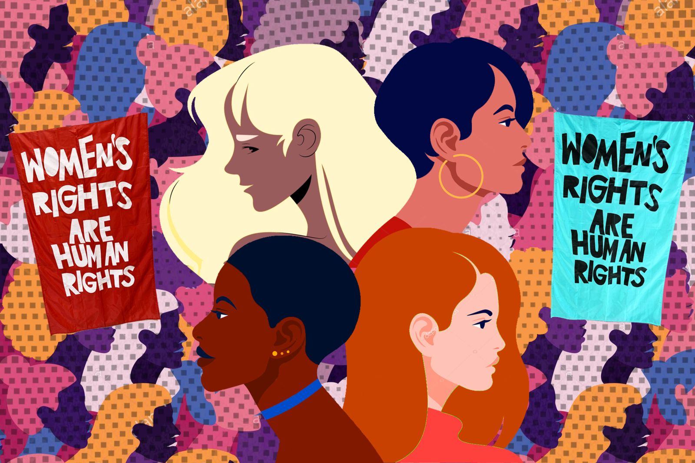
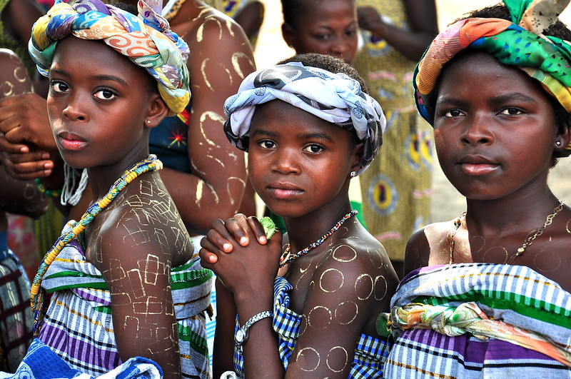
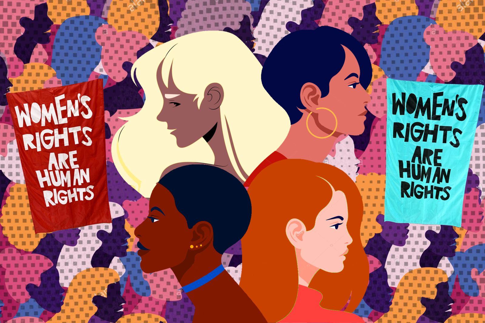
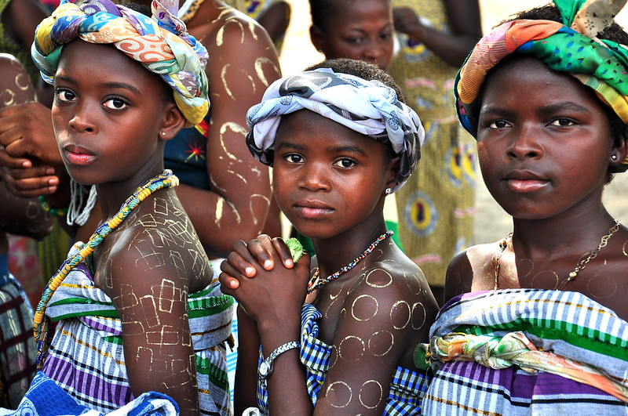

Misogyny: A Series of
Contributing Factors
 



Male Gaze vs. Female Gaze:
To put it simply,'The Female Gaze' is essentially the
way in which
women are
protrayed through the eyes of a
woman, while 'The Male Gaze' refers to the manner in which men portray women in a way such that men get
empowered after diminishing a woman's role as a subject and turning her into an object for the sake of male
pleasure.
Social Media:
Social media has been a fuel for various kinds
of misogyny
resorting from
different male figures expressing their blatantly dehumanizing views of women that may come in the form
of being sexual, verbal, or anything along the lines of that. These messages are then passed on to young
viewers, both male and female - but largely male - or even older users, who then collectively come
together to beat up female users for their presence of that social media platform, expressing their
hypocrisy and only liking a certain trait on one woman while hating it on the rest. For instance, the
age long idea of sexualizing clothes has been deemed as attractive for many men, but in the same manner,
when a woman who is not of interest to that particular man, the said clothes would - instead of being
attractive - be deemed "provocative", "attention-seeking", and "disgraceful". This, as a result, creates
endless insecurities in female users, but especially younger, more vulnerable ones.
Family:
We mirror what we see; this begins with our families. Our families are our biggest
influencers,
always
forming a base of what to believe, whether you want to believe in the same things or not. In our
families, we experience several traditional beliefs such as expecting women to be the cooks and the
men
to be the money makers, hence creatign a path for men to be deemed as having the more "important"
role
in society. Our families, for instance, also give us an idea of how to treat women. Many fathers
might
make jokes out of the mother's insecurities, they might undermine their work, dismiss their feelings
and
emotions, and then all of these are mirrored as a result, creating a never-ending cycle of
misogyny.
Other Factors:
- Childrens' movies
- Advertisements
- School books/textbooks
- Public figures
- History
- Service/belief groups
- Medical practices
And the list goes on...
More to be discussed in our weekly podcast 'Aasha'on Spotify!.